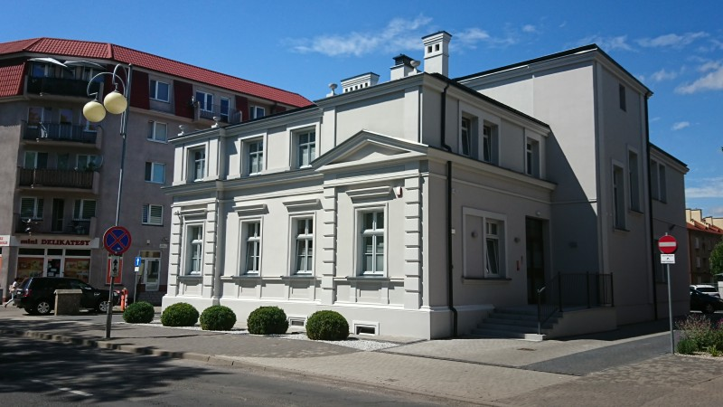

Pod jaki numer zadzwonić?
Rejestracja POZ
62 580 22 52Telefon komórkowy
573 335 284Do potwierdzenia: osobne godziny rejestracji POZ nie są opublikowane. Niektórzy specjaliści mają inne numery rejestracji.
Telefony poszczególnych specjalistów
Jak do nas trafić?
ul. Babina 362-800 KaliszWyznacz trasę w mapach
Mapa otworzy się w serwisie Google Maps.
Do potwierdzenia: wejście do przychodni, dostępność dla osób z ograniczoną mobilnością, parking i najbliższe przystanki. Przed przyjazdem zapytaj o potrzebną pomoc.
Czy mogę leczyć się na NFZ?
Przychodnia świadczy podstawową opiekę zdrowotną w ramach umowy z NFZ. Przyjmują lekarze rodzinni, internista i pediatra.
Do potwierdzenia: zasady zapisania do POZ, deklaracja wyboru, dokumenty do wizyty oraz finansowanie konkretnego świadczenia.
Profilaktyka i opieka koordynowana
Przychodnia informuje o programach CHUK i „Moje Zdrowie – bilans zdrowia osoby dorosłej” oraz opiece koordynowanej.
Do potwierdzenia: warunki udziału, dostępność i zapisy do programów. Zapytaj rejestrację lub swojego lekarza.
Zapytaj o opiekę na NFZ62 580 22 52Jakie wyposażenie diagnostyczne ma przychodnia?
Opis zrealizowanego projektu grantowego wymienia spirometr, aparat EKG, rejestratory Holter EKG i Holter ciśnieniowy oraz aparat ultrasonograficzny i mobilne aparaty USG.
Do potwierdzenia: dostępność konkretnego badania, skierowanie, termin i finansowanie. Sam wykaz sprzętu nie określa zasad wykonania badań.
Opis projektu grantowego przychodniGdzie szukać pomocy po godzinach?
Opieka nocna i świąteczna
Wojewódzki Szpital Zespolony w Kaliszu, ul. Poznańska 79.
62 765 16 54Teleplatforma Pierwszego Kontaktu (TPK)
Źródło przychodni podaje bezpłatną pomoc telefoniczną poza godzinami POZ:
800 137 200Poniedziałek–piątek: 18:00–8:00 następnego dnia.
Weekendy, święta i inne dni ustawowo wolne od pracy: całodobowo.
Do potwierdzenia: aktualność TPK oraz miejsca, telefonów i zasad pomocy nocnej i świątecznej. Informacje pochodzą ze strony przychodni.
Transport sanitarny
Art & Med — kontakt podany w informacjach przychodni.
62 594 11 12660 703 333Do potwierdzenia: aktualność telefonów i zasady zamówienia transportu.
Gdzie znajdę dokumenty?
Do potwierdzenia: aktualność dokumentów, w tym PDF z 2019 r., procedura skarg, regulamin oraz zasady udostępniania dokumentacji. Zapytaj rejestrację o aktualne wersje.
Co oznacza wiadomość o MyDr?
Przychodnia opublikowała dwa komunikaty o ochronie danych. Poniżej zachowano ich treść ze źródeł.
Do potwierdzenia: aktualność komunikatów i wskazanych w nich kontaktów. Są to cytowane informacje z audytu z 12 października 2026, a nie nowa ocena bezpieczeństwa.
Zawiadomienie o naruszeniu ochrony danych osobowych
Co się stało?
Z przykrością informujemy, że system naszego podmiotu przetwarzającego, tj. MyDr Sp. z o.o. z siedzibą w Warszawie, padł ofiarą cyberataku, w wyniku którego doszło do naruszenia poufności Pani/Pana danych osobowych, a w niektórych przypadkach również danych osobowych Pani/Pana przedstawiciela ustawowego lub osoby upoważnionej do dostępu do dokumentacji medycznej.
Chcielibyśmy podkreślić, że nie oznacza to, że Pani/Pana dane zostały odczytane, wykorzystane lub upublicznione. Zespoły MyDr oraz zewnętrzni eksperci stale monitorują sytuację i nie wykryli, aby dane objęte incydentem zostały publicznie udostępnione. Przeprowadzone przez MyDr analizy forensic potwierdziły, że incydent został opanowany oraz że nie ma dowodów wskazujących na dalszy nieuprawniony dostęp do systemów.
O jakie dane chodzi?
Ustalenia dokonane przez MyDr przy wsparciu ekspertów zajmujących się zewnętrzną analizą wskazują, że incydent obejmował ograniczony zakres danych przed 12 kwietnia 2024 r. oraz, w nielicznych przypadkach, danych zawartych w anulowanych skierowaniach na badania medyczne wystawionych po tej dacie.
Dane pacjenta przed 12 kwietnia 2024 r. Jeżeli incydent objął Pani/Pana dane przetwarzane przed 12 kwietnia 2024 r., wśród danych objętych incydentem mogły znaleźć się Pani/Pana: imię, nazwisko, adres zamieszkania, dane kontaktowe, numer PESEL, dane dotyczące zdrowia, ubezpieczenia społecznego, i (jeśli zostały podane) informacje dotyczące pracodawcy, lub inne dane identyfikacyjne.
Dane w anulowanych skierowaniach. Jeżeli incydent objął Pani/Pana dane zawarte w anulowanych skierowaniach na badania medyczne, wśród danych objętych incydentem mogły znaleźć się Pani/Pana: imię, nazwisko, adres zamieszkania, dane kontaktowe, numer PESEL oraz ograniczony zakres danych dotyczących zdrowia zawartych w anulowanych skierowaniach.
Dane przedstawiciela ustawowego lub osoby upoważnionej do dostępu do dokumentacji medycznej. Jeżeli jest Pani/Pan przedstawicielem ustawowym pacjenta lub osobą upoważnioną do dostępu do jego dokumentacji medycznej, zakres danych objętych incydentem mógł zawierać Pani/Pana dane wskazane w tej dokumentacji. W zależności od zakresu przekazanych informacji może to dotyczyć takich danych jak: imię i nazwisko, adres zamieszkania, dane kontaktowe, numer PESEL oraz informacja o stopniu pokrewieństwa lub rodzaju relacji z pacjentem.
Mimo że prowadzony przez MyDr stały monitoring nie wykazał dotychczas żadnych przypadków wykorzystania ani publicznego ujawnienia danych, nie można wykluczyć, że, ze względu na charakter incydentu, w określonych okolicznościach może on potencjalnie wiązać się z wysokim ryzykiem dla praw lub wolności osób, których dane zostałyby niewłaściwie wykorzystane. Chcemy pomóc Pani/Panu zachować bezpieczeństwo na wypadek zmiany okoliczności, dlatego przekazujemy informacje o ewentualnych konsekwencjach oraz zalecanych środkach ostrożności, które mogą pomóc w ochronie danych osobowych i ograniczeniu potencjalnych skutków incydentu.
Jakie ewentualne konsekwencje zidentyfikowaliśmy?
Wśród danych objętych incydentem mógł znajdować się numer PESEL, który w połączeniu z imieniem i nazwiskiem oraz danymi kontaktowymi, w określonych sytuacjach, mógłby posłużyć osobom nieuprawnionym do działań niezgodnych z prawem. W szczególności, jeśli dane te zostałyby publicznie ujawnione, mogłyby zostać użyte przez osoby nieuprawnione do:
zaciągnięcia kredytu, pożyczki lub zawarcia innych umów bez Pani/Pana wiedzy;
uzyskania dostępu do Pani/Pana danych dotyczących zdrowia w instytucjach medycznych, w których uwierzytelnianie osób następuje przy pomocy numeru PESEL.
Incydent mógł dotyczyć również danych dotyczących zdrowia, których nieuprawnione użycie może naruszać Pani/Pana prawa, w szczególności, gdyby osoby trzecie próbowały wykorzystać te informacje:
w sposób niekorzystny dla Pani/Pana, w tym prowadzący do naruszenia Pani/Pana praw lub gorszego traktowania w środowisku zamieszkania;
w celu dokonania oszustwa, np. poprzez kontakt z Panią/Panem lub bliskimi w celu zaoferowania alternatywnych metod leczenia zdiagnozowanych u Pani/Pana chorób.
Raz jeszcze chcemy podkreślić, że warto zachować ostrożność i czujność, jednak na obecnym etapie prowadzony przez MyDr monitoring nie wykazał żadnych przypadków wykorzystania ani publicznego ujawnienia danych. Nie ma zatem powodów do niepokoju.
Jakie działania może Pan/Pani podjąć?
W przypadku numeru PESEL:
można bezpłatnie zastrzec numer PESEL w aplikacji mobilnej mObywatel, przez Internet na stronie mObywatel.gov.pl lub osobiście w Urzędzie Gminy (Miasta). Instytucje finansowe są obecnie zobligowane weryfikować przy zawieraniu umów, czy PESEL jest zastrzeżony, co ogranicza ryzyko użycia danych do nieuprawnionego zaciągania zobowiązań na szkodę innych osób. Zastrzeżenie PESEL nie blokuje jednak możliwości rejestracji u lekarza, realizacji recepty czy załatwienia sprawy w urzędzie – więcej informacji pod linkiem: https://www.gov.pl/web/gov/zastrzez-swoj-numer-pesel-lub-cofnij-zastrzezenie;
można poinformować inne placówki medyczne, w których świadczone są dla Pani/Pana usługi, iż osoby trzecie mogą chcieć wykorzystać Pani/Pana PESEL w celu przejścia procesu autoryzacji w tych jednostkach.
W przypadku danych dotyczących zdrowia:
w razie potwierdzenia wykorzystania danych przez osoby nieuprawnione może Pani/Pan dochodzić względem nich ochrony swoich praw na podstawie właściwych przepisów w tym Kodeksu Cywilnego;
warto zachować szczególną ostrożność wobec wszelkich kontaktów z nieznanymi osobami, które nie miały prawa znać historii Pani/Pana zdrowia, a które proponują Pani/Panu skorzystanie z oferowanych przez nie usług medycznych, pseudomedycznych lub terapeutycznych.
Bez względu na zakres danych osobowych, w przypadku podejrzenia, że zostały one wykorzystane niezgodnie z prawem, można zgłosić to na Policję. Informacje o sposobie zgłoszenia znajdują się pod adresem: https://www.gov.pl/web/gov/zglos-przestepstwo.
Podkreślamy ponownie, że prowadzony przez MyDr monitoring nie wykazał dotychczas żadnych przypadków wykorzystania ani publicznego ujawnienia danych.
Jakie działania zostały już podjęte?
Aby ograniczyć negatywne skutki wykrytego ataku MyDr Sp. z o.o., podjął następujące działania:
niezwłocznie opanował i zakończył incydent, a także wdrożył dodatkowe, ukierunkowane środki techniczne i organizacyjne mające na celu zapobieganie podobnym incydentom w przyszłości;
zaangażował wyspecjalizowaną firmę z zakresu cyberbezpieczeństwa w celu przeprowadzenia szczegółowej analizy incydentu;
zgłosił incydent wyspecjalizowanej jednostce Policji - Centralnemu Biuru Zwalczania Cyberprzestępczości Policji i ściśle z nią współpracuje;
współpracuje z Ministerstwem Cyfryzacji, Centrum e-Zdrowia, CSIRT NASK i CSIRT Centrum e-Zdrowia;
współpracuje z Urzędem Ochrony Danych Osobowych;
kontynuuje monitoring systemów w celu wykrycia ewentualnych skutków incydentu i niezwłocznego reagowania na pojawiające się zagrożenia;
prowadzi stały monitoring internetu w celu wykrycia, czy dane, których dotyczy incydent, zostały upublicznione.
Nasza placówka - jako administrator Pani/Pana danych osobowych, po otrzymaniu zawiadomienia o naruszeniu od MyDr Sp. z o.o., dokonała zgłoszenia tego naruszenia do Prezesa Urzędu Ochrony Danych Osobowych.
Gdzie można uzyskać dalsze informacje?
W przypadku dodatkowych pytań dotyczących zakresu incydentu prosimy o kontakt dane@mydr.pl.
Z poważaniem
Zarząd Arsmedica sp. p. lekarzy
Lekarz Medycyny Pracy i Transportu Piotr Lisowski
Lekarz Ortopeda Piotr Wojciechowski
Usługi Pielęgniarskie i Informatyczne Joanna Urban
___________________________________________________________________________________________
Informacja przychodni z aktualności
Szanowni Pacjenci,
W związku z otrzymanymi przez Państwa wiadomościami SMS dotyczącymi naruszenia bezpieczeństwa danych osobowych, chcielibyśmy przekazać kluczowe i uspokajające informacje:
Nasza przychodnia nie padła ofiarą cyberataku. Państwa dane w systemach wewnętrznych ARSMEDICA są w pełni bezpieczne.
Skąd zatem ten SMS? Incydent dotyczy zewnętrznego, ogólnopolskiego systemu informatycznego MyDr (oraz portalu pacjent.mydr.pl), z którego korzystają tysiące placówek medycznych w całej Polsce (w tym nasi lekarze m.in. do wystawiania e-recept).
Obowiązek prawny: Jako administratorzy Państwa danych medycznych, zostaliśmy prawnie zobowiązani do natychmiastowego powiadomienia każdej osoby, której dane mogły znaleźć się w systemie objętym wyciekiem.
Co mogło wyciec?
Naruszenie mogło objąć numery PESEL oraz wybrane informacje o stanie zdrowia (historia wizyt, recepty). Według informacji Ministerstwa Cyfryzacji oraz służb odpowiedzialnych za cyberbezpieczeństwo, dane te nie zostały upublicznione w sieci.
Jak mogą się Państwo zabezpieczyć? (Dwa proste kroki)
Zastrzeżenie numeru PESEL: To najważniejsza ochrona przed ewentualną próbą wyłudzenia kredytu. Zastrzeżenia można dokonać natychmiast, bezpłatnie w aplikacji mObywatel, na stronie gov.pl lub osobiście w dowolnym urzędzie gminy.
Weryfikacja wycieku: Rząd uruchomił specjalną, bezpieczną stronę bezpiecznedane.gov.pl. Po zalogowaniu się tam (np. Profilem Zaufanym) mogą Państwo bezpłatnie sprawdzić, czy Państwa PESEL znalazł się w tej konkretnej bazie.
Ważne: Zastrzeżenie numeru PESEL w żaden sposób nie blokuje możliwości rejestracji do lekarza, odbywania wizyt ani wykupywania e-recept w aptekach. Nasza przychodnia przyjmuje pacjentów całkowicie normalnie.
Prosimy o zachowanie standardowej czujności przy odbieraniu podejrzanych telefonów czy wiadomości od nieznajomych.
W razie dodatkowych pytań, nasz personel w rejestracji pozostaje do Państwa dyspozycji.
Z wyrazami szacunku,
Dyrekcja i Zespół ARSMEDICA Sp.P.
Lekarz Medycyny Pracy i Transportu Piotr Lisowski
Lekarz Ortopeda Piotr Wojciechowski
Usługi Pielęgniarskie i Informatyczne Joanna Urban